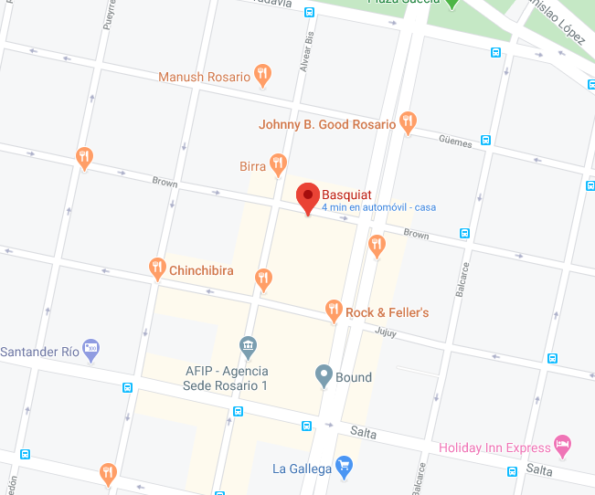

<ion-header no-border>
    <app-baby-header></app-baby-header>

    <ion-toolbar>
        <ion-searchbar searchIcon="" placeholder="Buscar" animated mode="ios" autocomplete="true" [(ngModel)]="querySearch" (ionChange)="doSearchBy()" debounce="500" (ionClear)="searchClear()">

            <ion-fab-button slot="start" [color]="querySearch ? 'secondary' : 'medium'" size="small" (click)="queryOffset = 0; getThreads()">
                <ion-icon size="small" name="search"></ion-icon>
            </ion-fab-button>
        </ion-searchbar>

        <div class="filter-chips">
            <ion-chip *ngIf="queryPoliticalPartyId" outline color="medium" (click)="politicalPartyClear()">
                <ion-label>{{politicalParty}}</ion-label>
                <ion-icon name="close-circle"></ion-icon>
            </ion-chip>
            <ion-chip *ngIf="querySearch" outline color="medium" (click)="searchClear()">
                <ion-label>{{querySearch}}</ion-label>
                <ion-icon name="close-circle"></ion-icon>
            </ion-chip>
        </div>

    </ion-toolbar>
</ion-header>

<ion-content>
    <ion-card>
        
        <ion-card-header>
          <ion-card-subtitle>salta 3214</ion-card-subtitle>
          <ion-card-title>Supermercado DonPepe</ion-card-title>
        </ion-card-header>
        <ion-card-content>
            <ion-button  expand="block"  shape="round" [routerLink]="['/thread']" routerLinkActive="router-link-active" >
                Reservar Turno
             </ion-button>
        </ion-card-content>
        
    </ion-card>
    <!-- Mensaje si no hay hilos -->
    <!-- <div *ngIf="threads.length == 0" class="no-items-yet"> -->
    <div class="no-items-yet">
        <ion-icon name="clock"></ion-icon>
        <h4 class="eon6-graycolor">Reserva tu turno para comprar</h4>
    </div>
        

</ion-content>